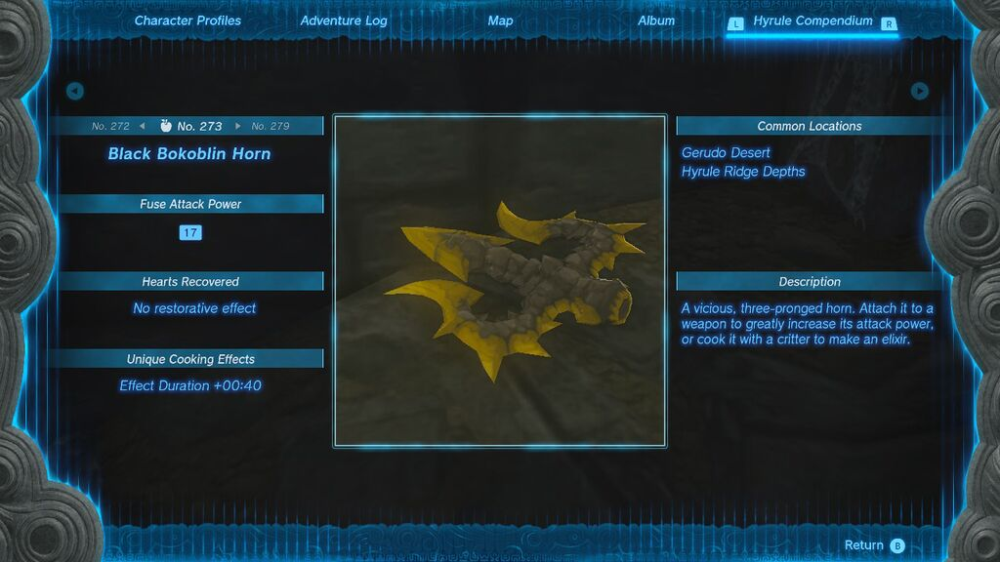

余料武器：素材选对了，攻击直接翻倍（游戏实机截图）
余料建造在初始空岛的伊萨神庙取得，之后所有武器都能贴素材。贴什么、贴在哪把武器上、贴错了怎么拆回，这三个问题搞懂了，武器库的强度会直接上一个台阶。本站七宝匕首终极攻略讲过一把具体武器，本篇讲整个系统机制。
- 余料攻击前列：白银莱尼尔刃角 55、白银莱尼尔碎角 51、古代之刃 50、白鬃莱尼尔刃角 44、吉布多之骨 40（贴箭最划算）、白银莫力布林犄角 33、费罗龙犄角 26、钻石 25。
- 融合给武器加额外耐久 +25；例外：近卫与瘴气武器 +10、普通格鲁德武器 +5（七宝匕首 +25）、骷髅怪掉落的手臂类武器 +3、锈与木质武器 +10。
- 背包里拆解会销毁素材；去一始村拆解屋找普彭达，花 20 卢比可无损拆回。
- 格鲁德武器让素材攻击翻倍：七宝匕首 28 加刃角 55 乘 2 得 138。
- 卓拉武器沾水翻倍：光鳞之枪 22 加刃角 55 得 77，沾水后 154，配希多水盾。
- 盾融合不加攻防、看的是用法；箭融合牙爪类攻击翻倍，多重弓只耗 1 个素材。
一、余料怎么取得
余料建造在初始空岛的伊萨神庙取得，取得后按住相应按键就能把素材贴到武器或盾上。素材来源遍布全游戏：怪物角、龙角、宝石、骨头，几乎所有能捡的材料都能贴。贴之前先看攻击值，别把高攻素材贴到快坏的低攻武器上浪费。
二、余料攻击表
| 素材 | 余料攻击 | 备注 |
|---|---|---|
| 白银莱尼尔刃角 | +55 | 全游戏最高，见人马完全指南 |
| 白银莱尼尔碎角 | +51 | 带粉碎、可破甲 |
| 古代之刃 | +50 | 贴箭一击必杀非 Boss 敌人；贴武器一击即碎（不触发古代箭的消灭效果） |
| 白鬃莱尼尔刃角 | +44 | 白鬃人马掉落 |
| 吉布多之骨 | +40 | 一击就碎，优先贴箭 |
| 白鬃莱尼尔碎角 | +40 | 带粉碎、可破甲 |
| 女王吉布多之翼 | +40 | 攻击带击退气流 |
| 大理石戈玛的腿 | +38 | 火神殿 Boss 掉落 |
| 白银首领波克布林犄角 | +37 | 白银首领波克布林掉落 |
| 队长构装体 IV 之角 | +35 | 高阶构装体掉落 |
| 白银蜥蜴战士之角 | +34 | 白银蜥蜴战士掉落 |
| 蓝鬃莱尼尔刃角 | +33 | 蓝鬃人马掉落 |
| 白银莫力布林犄角 | +33 | 中期主力余料 |
| 莫尔德拉吉克之颚 | +32 | 骨头素材，配骨头精通更强 |
| 白银霍拉布林犄角 | +32 | 白银霍拉布林掉落 |
| 白银波克布林犄角 | +31 | 白银波克布林掉落 |
| 白银蜥蜴战士尾巴 | +31 | 白银蜥蜴战士掉落 |
| 古栗欧克犄角（火 / 冰 / 雷） | +30 | 带元素伤害 |
| 斯塔诺克斯之角 | +29 | 骨头素材 |
| 费罗龙犄角 | +26 | 龙素材，见四条龙素材刷取指南 |
| 钻石 | +25 | 能贴但不划算，钻石优先卖钱或强化 |
| 古栗欧克内脏 | +1 | 古栗欧克掉落（融合攻击只有 1，不建议贴） |
| 白龙犄角 | +20 | 命中回 0.25 颗心 |
| 龙牙 | +20 | 龙素材，带元素伤害 |
| 龙爪 | +18 | 龙素材，带元素伤害 |
| 龙鳞 | +16 | 龙素材，带元素伤害 |
表里没列的素材不代表不能贴：几乎所有材料都能贴，贴之前看一眼背包里的余料攻击数字。宝石类（红宝石、蓝宝石、黄玉、蛋白石、左纳尼乌姆、燧石）余料攻击只有 1，贴武器不加伤害，价值在元素效果，优先贴箭；牙、爪类素材贴箭时攻击翻倍，详见第七节。

怪物角：余料的主要来源（游戏实机截图）
三、耐久加成规则
融合不只加攻击，还给武器加额外耐久，通常是 +25。但有几类武器例外：近卫武器和瘴气武器只加 10，普通格鲁德武器只加 5（七宝匕首照样加 25），骷髅怪掉落的手臂类武器只加 3，锈武器和木质武器加 10。贴素材前先看武器种类，别指望格鲁德武器靠余料补很多耐久，它的优势在翻倍攻击，不在耐久。
四、拆解：销毁与无损两种
贴错了怎么办？在背包里直接拆解会销毁素材，素材就没了。正确做法是去一始村的拆解屋找普彭达，花 20 卢比就能无损拆回，武器和素材都保留。高攻素材一律走拆解屋拆，别在背包里手滑销毁。
五、翻倍配合：格鲁德与卓拉
余料的上限来自武器特效配合：格鲁德武器让素材攻击翻倍，七宝匕首本身 28，贴刃角 55 后翻倍得 138；卓拉武器沾水翻倍，光鳞之枪 22 贴刃角 55 得 77，沾水后 154，配合希多的水盾使用，见本站五位贤者能力全解。这两个配合是余料系统的毕业玩法，武器和素材要成套准备。

余料武器：素材贴上去，攻击与耐久一起涨（游戏实机截图）
六、盾融合：不加攻防，加的是用法
盾融合和武器融合是两套逻辑：武器融合看数字，盾融合看用法。素材贴到盾上，不加耐久、也不加防御，只有一个例外——熔岩长板能加 1 点防御。盾击伤害倒是按素材的余料攻击算，带刺铁球、怪物角贴盾，盾反出去的那一下是真掉血的。但别指望靠盾融合堆出高攻击：同样的角贴武器是全程输出，贴盾上只有盾反那一下能打到人，亏得多。
盾反是盾融合的开关：很多贴盾效果要盾反成功才触发。基斯翅膀贴盾，盾反就是一次近距离的状态攻击——火基斯翅膀放火、电基斯翅膀放电、冰基斯翅膀冻人，贴脸打强敌时比硬砍还稳。烟雾菇贴盾则是被动触发：敌人打中你的盾，烟雾当场爆开，趁它看不见绕后偷袭。迷惑菇同理，贴盾挨打就放孢子。
左纳乌装置贴盾，全是赶路和解谜的牌：火箭举盾直接升空，是游戏里最便宜的升空办法；弹簧举盾弹跳，过大沟壑不用绕路；大炮举盾开火，举着盾就能远程点名；火焰、冰冻、光线发射器举盾扫射，配左纳乌盾更省电；矿车、雪橇贴盾，滑盾在任何地形都顺滑，冰冻肉贴盾也有同样效果；巨大光亮花种子贴盾，地底探路自带一盏灯，星星碎片贴盾照得更远。
盾融合的决策就一句话：先问“我想让盾多一个什么功能”，而不是“加多少攻击”。常驻推荐三张牌：火箭盾赶路、烟雾菇盾保命、光亮花种子盾探地底。反过来，两样东西别贴盾：高攻角（盾击那点伤害不如贴武器）、另一面盾（贴盾只改命中框和滑行手感，防御不涨）。
七、箭融合：便宜素材的主场
箭融合走开弓时的快捷菜单，只读背包里的材料，地上的东西贴不上。射出去就是消耗品，命中墙壁也一样没了；没射出之前随时可以换，所以好素材别急着贴，先瞄准再决定。箭融合分两类：要伤害的贴高攻素材，要效果的贴 1 攻素材，分不清就看背包里的数字——数字高贴伤害，数字 1 贴效果。
伤害类里最划算的是吉布多之骨：+40，贴武器一击就碎，贴箭却正好——箭本来就是一次性的，缺点直接不存在。牙、爪类素材贴箭时攻击翻倍，更是箭上的常客。多重弓是箭融合的放大器：人马弓一次射 3 支、5 支，每支箭都带融合效果，却只消耗 1 个素材——五连弓配一根吉布多之骨，五支全中，光融合部分就是 200 点伤害。钻石 +25 贴箭也能用，但太贵，别烧钱。
效果类素材的攻击只有 1，价值全在效果上：基斯眼球是追踪箭，打飞得快、个头小的目标就靠它，火、冰、电基斯眼球还附带元素；红宝石、蓝宝石、黄玉贴箭是火、冰、雷三色爆炸；炸弹花是爆炸箭，清群怪的主力；闪耀果的闪光能秒掉一小片骷髅怪；烟雾菇放烟雾开偷袭；迷惑菇让敌人互打，但附近只有一只敌人时它会转而打你，先数人数再射；光亮花种子是照明箭，地底探路不用走过去；翅膀让箭飞得更远。
古代之刃是箭上的特例：+50，贴箭就是古代箭，非 Boss 敌人一击消灭、尸体直接消失、不掉落；Boss 不吃秒杀，只能当高伤害用。宝箱里一共能开出 10 把，通关英杰神殿后，还可以在神殿的采矿构装处用 50 个左纳尼乌姆换一把。留着打难缠的精英怪和白银人马——打白银人马一箭就没，但角也捡不到，图省事才用。
八、什么武器贴什么：按阶段的决策
融合是加法，底子决定上限：王族之剑 24 点攻击，贴刃角 55 就是 79；王族双手剑 34 点，贴刃角是 89。这两把是后期通用底子，耐久也够长，高攻素材优先贴它们。近卫双手剑 32 点，贴莫尔德拉吉克之颚 32 是 64，配骨头精通还能再翻 1.8 倍，见第九节。反过来，再好的素材贴到快坏的锈武器上也是浪费——武器一碎，素材跟着没。
按阶段分：前期（还没打过蓝鬃人马）有什么贴什么，波克布林角 +4、蝙蝠翅膀这类过渡素材别攒着，贴上去就比白板强；中期主力是白银莫力布林犄角 +33 和蓝鬃莱尼尔刃角 +33，刷莫力布林和蓝鬃攒着用；后期白银刃角 +55 只贴高耐久底子，王族系列、近卫系列优先，别贴木质和锈武器。
按场景分：打 Boss、打白银人马，用最高攻单体；清营地用元素角，古栗欧克犄角 +30 带范围元素伤害，一刀一片；破甲、打石头类敌人用碎角（带粉碎）或锤类；赶路解谜优先功能性融合，火箭盾、炸弹花箭比多 10 点攻击有用。
翻倍优先级：有格鲁德武器先贴格鲁德，素材攻击直接翻倍；沾水场合用卓拉武器，沾水翻倍；左纳乌武器贴左纳乌装置或素材有额外加成；三者都没有，老实按攻击表从高往低贴。最后是别贴清单：钻石留着卖钱或强化；龙角留着做 30 分钟料理，见本站料理机制全解；宝石类贴武器没用（攻击只有 1），贴箭才有效果；吉布多之骨别贴武器，见第七节。
九、骨头武器与套装加成
辉煌套三件升到二星，套装加成“骨头武器精通”生效；邪灵套不用强化，穿齐三件加成就生效：骨头武器伤害 ×1.8，同时骷髅怪不主动攻击（伪装效果）。算骨头的素材只有四种：尖刺骨头 +7、斯塔诺克斯之角 +29、莫尔德拉吉克之颚 +32、吉布多之骨 +40。
骨头精通流别用吉布多之骨：它贴武器一击就碎，骑人马不耗耐久也照碎，翻倍还没打出来就没了。用莫尔德拉吉克之颚，耐久正常：近卫双手剑 32 点贴颚 32 是 64，穿辉煌套或邪灵套再 ×1.8，约 115 点。辉煌套在卡卡莱特村的服装店买，做完瘴气病支线再去更便宜；邪灵套要打三座罗梅伊迷宫的支线。骨头流成型之前，莫尔德拉吉克之颚先当普通高攻素材用，别等套装齐了才开贴。
常见问题
- 余料攻击最高是多少？白银莱尼尔刃角 +55，全游戏最高。
- 贴错了怎么拆？去一始村拆解屋找普彭达，20 卢比无损拆回；背包拆解会销毁素材。
- 格鲁德武器为什么强？素材攻击翻倍，七宝匕首贴刃角可达 138。
- 盾融合能加攻击吗？不加面板攻击也不加防御，熔岩长板例外，只加 1 点防御；素材的余料攻击只算进盾击伤害。盾融合看的是功能：火箭升空、烟雾菇、照明，详见第六节。
- 牙、爪类素材贴箭真的翻倍吗？是，贴箭时牙、爪类按双倍攻击算；吉布多之骨 +40 贴箭最划算，多重弓每支箭都带效果、只耗 1 个素材，详见第七节。